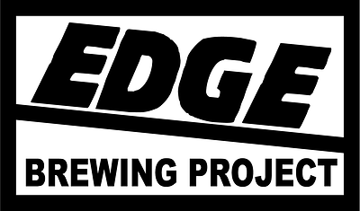

The Victorian Amateur Brewing Championships (Vicbrew 2014) will be held on 20th & 21st September 2014 at the Belgian Beer Café Eureka, 5 Riverside Quay, Southbank Melbourne. Melways reference: 2F E7 .
Placing (1st, 2nd or 3rd) in any category at Vicbrew 2014 qualifies entrant to submit an entry, in the same category, at AABC 2014 Canberra.
Online Entries:
Online Entry Registration is available for Vicbrew 2014 From
August 1st via compmaster http://www.compmaster.com.au
NOTE: Online entries will still need to be delivered to a Vicbrew 2014
collection centre by Saturday 06/09/2014
Entries may be submitted upto Saturday 6th September 2014 at the following collection points:
Champion Beer of Show
|
Champion Brewer of Show
|
Best Club of Show
|
11. Stout Category Sponsor
|
Best Novice Brewer |
|
| Vicbrew 2014
Entry Collection Points |
Geelong
|
|
|
||
| 13. India Pale Ale Category Sponsor 
|
6. Pale Ale Category Sponsor
|
|
| 5. Strong Lager Category Sponsor 
|
|
10. Porter Category Sponsor |
1. Low Alcohol Category Sponsor |
2. Pale Lager Category Sponsor 3. Pilsener Category Sponsor 12. Strong Stout Category Sponsor
|
14. Strong Ale Category Sponsor |
4. Amber & Dark Lager Sponsor |
||
Vicbrew
2014 Entry Form in pdf format (draft)
Categories and Styles
list for Vicbrew 2014
AABC 2014 Styleguides
in pdf format, one page per style, to be used at Vicbrew 2014.
AABC 2014 Styleguides in
pdf format, condensed version.
Beer Judging Form to be used
at Vicbrew 2014
Mead Judging Form to be used
at Vicbrew 2014
Cider Judging Form to be used
at Vicbrew 2014
We hope to see you at Vicbrew 2014.